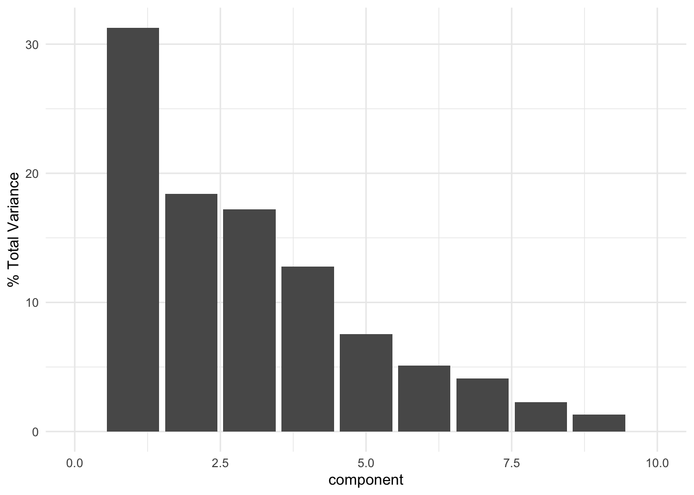

library(corrr)
library(GGally)
library(recipes)
library(tidytext)
library(tidyverse)
library(lubridate)Mar Casado PCA Validation
The aim of this document is to validate results of the ml.js package PCA method in JavaScript for an Observable course on Data Science Workflows in JavaScript (Session 3). This example closely follows the example from the palmerpenguins package documentation.
Data source: Marcos Gonçalves da Silva, Juliana Nascimento Silva, Helena Rodrigues Fragoso, Natalia Pirani Ghilardi-Lopes (2019).Temporal series analysis of abiotic data for a subtropical Brazilian rocky shore. Data in Brief, Volume 24. ISSN 2352-3409, https://doi.org/10.1016/j.dib.2019.103873.
Attach packages
Get data
Read in the CSV, and add a column indicating “hot moist” and “cool dry” seasons according to authors.
mc <- read_csv("marCasadoData.csv") |>
mutate(season = dplyr::case_when(lubridate::month(month) %in% c(10, 11, 12, 1, 2, 3) ~ "hot moist", TRUE ~ "cool dry"))Explore correlations:
marCasadoCorr <- mc %>%
dplyr::select(-month, -season) %>%
correlate() %>%
rearrange()Make the PCA recipe:
mc_recipe <-
recipe(~., data = mc) %>%
update_role(month, season, new_role = "id") %>%
step_normalize(all_predictors()) %>%
step_pca(all_predictors(), id = "pca") %>%
prep()Do PCA:
mcPCA <-
mc_recipe %>%
tidy(id = "pca") Create a table of loadings:
mcPCA |> select(-id) |> pivot_wider(id_cols = "terms", names_from = "component", values_from = "value")# A tibble: 9 × 10
terms PC1 PC2 PC3 PC4 PC5 PC6 PC7 PC8
<chr> <dbl> <dbl> <dbl> <dbl> <dbl> <dbl> <dbl> <dbl>
1 meanHumidity -1.93e-2 -0.186 -0.594 -0.438 0.387 0.223 -0.281 0.215
2 meanPressure -5.32e-1 0.112 0.213 0.0817 0.0962 -0.0950 -0.139 -0.409
3 windSpeed -6.08e-2 0.546 -0.441 0.0640 0.204 0.115 0.620 -0.241
4 windDirection -3.12e-1 -0.498 0.141 -0.0771 -0.130 0.664 0.401 -0.0812
5 PAR 5.24e-1 -0.150 -0.0363 0.0385 -0.337 -0.0758 0.373 0.138
6 seaSurfaceTe… 5.27e-1 -0.114 0.0661 -0.151 0.163 0.168 -0.174 -0.769
7 maxTide -3.46e-4 -0.00917 -0.448 0.672 -0.337 0.308 -0.361 -0.0934
8 minTide -5.03e-2 0.466 0.0173 -0.527 -0.628 0.256 -0.201 -0.0315
9 salinity 2.45e-1 0.391 0.425 0.195 0.365 0.541 -0.126 0.317
# ℹ 1 more variable: PC9 <dbl>Visualize varianced explained by PC
mc_recipe %>%
tidy(id = "pca", type = "variance") %>%
dplyr::filter(terms == "percent variance") %>%
ggplot(aes(x = component, y = value)) +
geom_col() +
xlim(c(0, 10)) +
ylab("% Total Variance") +
theme_minimal()
Create biplot
pca_wider <- mcPCA %>%
tidyr::pivot_wider(names_from = component, id_cols = terms)
arrow_style <- arrow(length = unit(.05, "inches"),
type = "closed")
pca_plot <-
juice(mc_recipe) %>%
ggplot(aes(PC1, PC2)) +
geom_point(alpha = 1,
size = 3,
aes(color = season)) +
scale_color_manual(values = c("steelblue", "darkorange"))
pca_plot +
geom_segment(data = pca_wider,
aes(xend = 5 * PC1, yend = 5 * PC2),
x = 0,
y = 0,
arrow = arrow_style) +
geom_text(data = pca_wider,
aes(x = 5 * PC1, y = 5 * PC2, label = terms),
hjust = 0,
vjust = 1,
size = 3,
color = '#0A537D') +
theme_minimal()